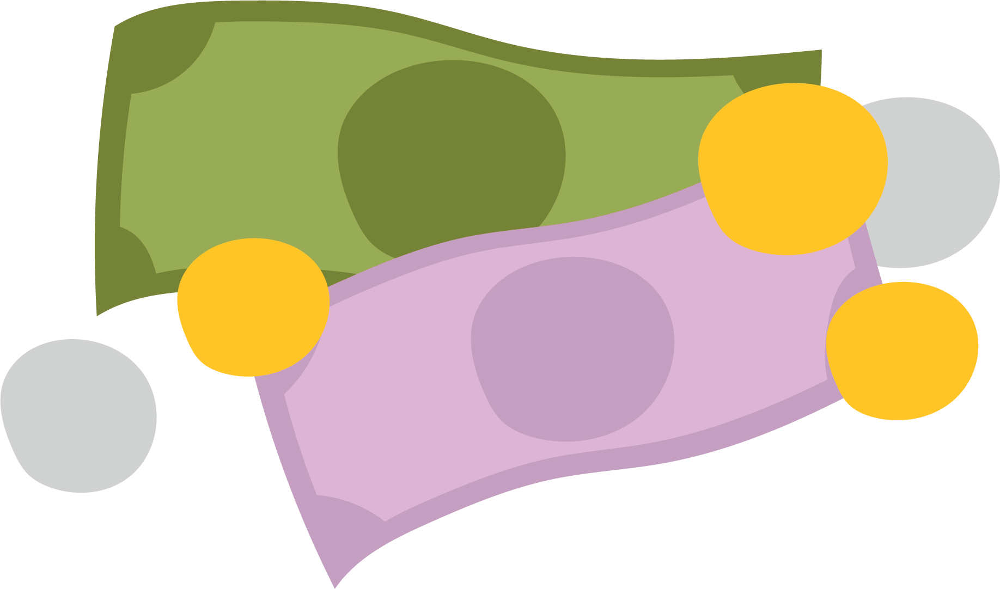

Data archiving
Learning objectives
The learning objectives for this module are to:
- Understand the reasons why archiving data is important
- Know what should be archived (spoiler: everything possible!)
- Know some places data can be archived, and how to choose where to archive
Plan for the session
The plan for this module is:
- First of all to get thinking about data archiving. If this module is in-person, you will discuss data archiving questions that I will put up in a minute with your neighbours, and report back your ideas.
- We’ll then come back together to highlight some key ideas for each of the questions.
- After this, I will run through the major reasons for archiving data, in case there is anything we’ve missed so far.
- I will also run through what should be archived: the short answer is everything.
- I will then give you some options for where to archive data, and we’ll go through some trade-offs to consider when choosing where.
- Finally, I’ll give a quick run through of open access publishing and licensing for your data.
Group discussion!
First of all, let’s get talking about archiving our work. Think about the following questions and discuss your thoughts with your neighbours. Then write some answers, and have a look at what your colleagues think is important in archiving research outputs.
25 minutes, then we’ll come back together to go over the important points!
- Why is archiving important?
- What do you think is important to archive?
- Where can you archive data?
- What are the major barriers to archiving?
25 minutes!
Let’s go through a few of the answers - can I have a volunteer for each of the four questions to read out just a few of the post-its?
- Why is archiving important?
- What do you think is important to archive?
- Where can you archive data?
- What are the major barriers to archiving?
Why archive data?
There are many reasons why we want to archive our data.
Firstly, archiving our data means it is accessible to everyone - this reinforces the idea that all our scientific outputs should be freely available to all. This is also important for transparency; everyone can see what data our results and conclusions are based upon, and everyone can see what decisions we’ve made regarding obtaining and cleaning our data. Archiving data can also be used to reinforce good practices in the field; you can demonstrate to colleagues how data should be properly managed and archived. Only by being the change we want to see can we inspire others to also properly archive their data.
Importantly, data being archived means we can test whether the results of a study are reproducible and replicable. Reproducible means we can use the archived data and methods to obtain the same results as the study, providing some verification. Replicable means the methods used in the study can be used with new data to reach the same conclusions. Having data archived also means it can be reused for future research, which is important in driving forwards the field. It might also be of benefit to Future You, if you want to continue this research or you just need to look something up in your data in ten years!
Archiving data also benefits you in terms of your publication record: data can (and should be) cited, which records the value of your data contributions to the field, not just the final publications you write. Lastly, archiving data can prevent others duplicating your efforts. Your colleagues might be interested in testing a question which your archived data can already answer (which should also gain you a citation!). In the case of negative results, this can be particularly valuable.
What should be archived?
Everything!
…that is possible, within reason.
The short answer is that everything possible should be archived. Depending on the project, this could include:
your final datasets, but also the raw data you started with
any code you have used for analyses
supplementary data or figures
the details of your data cleaning and/or analytical workflow
what you were listening to or the weather…
This last one of course is a bit of a joke, but serves to emphasise that you should archive anything to do with a project that you think could be useful to you or a colleague in future. Regarding datasets, it’s also really important that you archive your raw data; this is the data you started with, for example, collected measurements from field specimens or a download from the PBDB, which you archive before doing any filtering or cleaning. Making these raw data available mean that your work is fully transparent and reproducible, and allows you to look back on changes you made in future when you’ve forgotten.
How to archive
Ideally, data should be archived in non-proprietary file formats, that is, those that can be opened with open software. For example, instead of .ai files for figures, you should save these as .svg. Or instead of using Microsoft file formats (e.g., .doc), using OpenDocument formats (e.g., .odt).
You should also aim to include a README file with your archive. This is a text document that explains the purpose, workflow and usage of the archived material; this can be invaluable to colleagues using your data, but also to you in future. It can also contain instructions for users to properly cite your work, and for how to collaborate with you.
Where can we archive?
There are lots of potential repositories for archiving, such as large generalised ones like Zenodo. Many institutions and funding bodies also have their own repositories, which they might even require you to archive with. For particular types of data, there are also specific repositories, such as the PBDB for occurrence data or MorphoSource for 3D scan data. As you’ve seen, we should also use GitHub for code or software releases.
Unfortunately the landscape here keeps changing; for example, the OSF used to be a key open-access repository, but has just announced (later 2026) it will no longer support archiving. And not all research repositories are free to archive data in. This means that there are a few things you need to consider when deciding on a repository…
Can anyone tell us some of the things we need to consider when we decide which repository to choose for archiving?
A freebie: not all repositories are free.

Trade-offs with repositories
Not all repositories for archiving your data are the same. They can vary in:
Longevity - how long they guarantee hosting and making your data available
Cost - Zenodo, for example, is free, but other repositories cost money (e.g., Dryad) or can cost after a certain amount of data
Capacity - as for cost, some repositories limit the quantity of data (total, and/or per file) you can archive
Accessibility - make sure the repository you choose is freely accessible for downloads too, not just uploads; for example, institutional repositories might allow you to store data, but might not be publically accessible
Discoverability - if you archive on lesser known repositories, and institutional ones, it might be harder for others to find your data; make sure you choose one properly indexed (e.g., on Scholar, Scopus…)
Citeability - make sure that the repository gives your archive a DOI so that others can cite you directly!
Version control - some repositories allow for this, and others don’t, for example on Zenodo you can upload new versions of data and retain access to the old versions
Licensing - repositories provide a range of licensing options (which we will briefly cover in a minute); for example, Zenodo defaults to CC-BY 4.0, but does provide choices
So which repository is suitable for you is a very specific question. We frequently use Zenodo, as it ticks all the boxes for discoverability and accessibility, is free, has DOI-linked version control, and links to GitHub.
Licensing
There are many licenses to choose from, and we need to pick one for anything we archive so that others know how they are able to use our data. For software there are specific licenses, such as MIT or Apache for making code fully reusable (only requires credit), or GNU (“copyleft”) in which all subsequent versions of the software must have the same licensing (i.e., continue to be free). For other research, you can choose between creative commons licenses:
CC0 is public domain, so anyone can use the work freely
CC BY licenses in general are frequently used, which allow use, adaptation and sharing while requiring author credit
CC BY-NC means others can use the work for non-commercial purposes
Note that some work contracts (e.g., if you don’t work for a university) and grant funding may require you to use certain licenses, and so this is something you should look into before deciding on an archive license.
These are some helpful tools to assist you in deciding which license to apply to your archived materials:
GitHub’s license selection tool (software): https://choosealicense.com
Creative Commons license tool (non-software research): https://creativecommons.org/chooser/
Open access publishing
Finally, we will quickly expand out from archiving to looking at open access publishing in general. After we’ve archived all our data and other materials in an open-access repository, we should also consider publishing any resulting articles in an open-access journal. Doing so brings the same benefits we discussed earlier for archiving, including increased citeability, transparency of work, and improving reuse in future studies.
In general, we prefer journals that are diamond open access - this means they are free to publish in (big benefit to you) and free for everyone to access (big benefit for colleagues and the public). There are a few of these specific to palaeontological research, and other general journals, such as:
(Non-palaeontology-specific) Royal Society Open Science
Most journals nowadays also accept preprints - these are manuscript versions published prior to peer-review, usually on a specialised platform (e.g. bioRxiv, EarthArXiv, EvoEcoRxiv). This allows you to get your work out there to be read and cited without the (often) long wait for peer review. Usually, manuscripts are preprinted at or around the same time as being also submitted to a peer-reviewed journal.
Lastly, other options exist, notably Peer Community in, which has a specialised palaeontology platform (PCI Paleontology). This is an alternative way, outside of traditional publishing models, to have your manuscript peer reviewed. You can submit a preprint, and PCI evaluates the preprint through peer review, then based on the reviews either publically recommends (or not) the preprint.
Resources
See specific slides for more links to open science journals, repositories, etc.
Tools for licenses: https://choosealicense.com , https://creativecommons.org/chooser/
Peer review preprint platform: Peer Community in Paleontology
Find open access journals: Directory of Open Access Journals (DOAJ)
Session info
─ Session info ───────────────────────────────────────────────────────────────
setting value
version R version 4.6.1 (2026-06-24)
os Ubuntu 26.04.1 LTS
system x86_64, linux-gnu
ui X11
language (EN)
collate C.UTF-8
ctype C.UTF-8
tz UTC
date 2026-10-28
pandoc 3.7.0.2 @ /usr/bin/pandoc
quarto 1.10.19 @ /usr/local/bin/quarto
──────────────────────────────────────────────────────────────────────────────